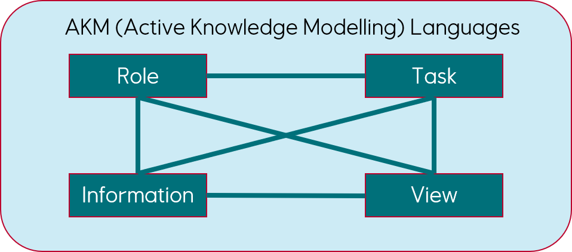
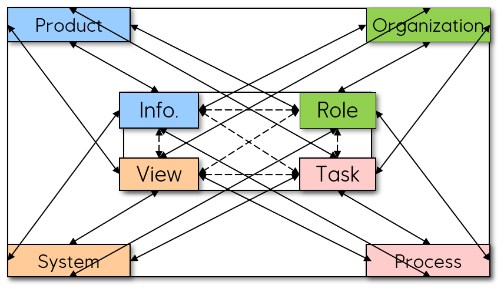

Active Knowledge Modelling (AKM) is an innovative way to capture and use enterprise knowledge from practical work. AKM models have positive effects on cyclic design and operations, productivity, safety, reuse, collaboration and learning.
AKM has matured for more than a decade. Modern open-source web technology has now reached a technical level that enables cost efficient large scale usage.
The AKM novelty comes from how relationships between roles, tasks and information are captured and presented to the users in the form of interactive and visual workspaces that support collaboration between roles in a distributed work environment.
The effects from deploying AKM based solutions are many. Firstly roles and their workspaces can be designed to share critical views securing a shared situational awareness. I.e. supporting design parameter balancing, and that task execution is in line with applicable regulations and policies. Secondly, task execution might create new tasks for other roles, and as such AKM makes collaboration more transparent, effective and precise, with direct impact on safety and security.
Workspaces
Workspaces are composed of roles, tasks, views and information.
IRTV modelling includes the design of symbols and constructs needed to easily communicate proposed solutions and job tasks and services across roles and resources of project life-cycles.

Roles define workspaces and describes resources required to execute tasks.
Tasks defines work, rules (task patterns) and complex product and process dependencies.
Information represents enterprise data and knowledge sources and content used.
View’s defines how information is presented to roles and managed to ease task (work) execution.
Modelling and executing tasks extend the values and principles of product, process and organization design. Work execution and management is improved by capturing context as well as contents in workspace models. Collaboration is enhanced by sharing views of situations and solutions. Creating fine-grained executable models and views of products, organizations, processes and systems and ICT platforms.
With AKM we can easily model new product structures, such as self-configurable components, systems and product families. This is supported by top-down as well as bottom-up workspace designed processes and role-oriented workspaces.
Product design, engineering and life-cycle services are currently based on modelling and using these disjoint structures:
- Product structures: - functions, components, systems configurations, production and operations, and repair,
- Organizational hierarchies, domain teams and discipline groups, and composed project teams,
- Processes flows: -activity-decomposed tasks, BPM delivery flows, IDEF0 patterns, work-patterns (eg. swimlanes),
- Systems; - functions, components, modules, systems configurations
Knowledge management as a science and industrial discipline go decades back in time. The challenge is manifold; - the capture and modelling of knowledge, the validity of modelled knowledge, and the sharing and use of knowledge in future work and projects. Enterprises that implement effective knowledge management will have huge advantages over competitors. Benefits include enhanced safety in operations, design of more effective and less vulnerable work processes and more effective collaboration between resources assigned to roles.
These capabilities provide functions for control of outcomes and properties. Components for controlling shape and features. Part structures for engineering parameter control. Manufacturing structures for adaptation to the machining. Assembly structures for controlling the composition of parts.
are currently dominated by hierarchies, but hierrchies are for resource and time calculations and reporting, and do not support knowledge sharing and learning. We need to design and manage practical resources ain role-specific teams, composed of humans, intelligent agents and smart machines.
System design, building and operation are currently performed in isolated expert silos, that are not able to support early design, nor role-oriented emergent teams and their practical workspaces
are currently based on:
- Activity decomposition and disjoint flows – business and project
- Jobs are defined by tasks needed, no context is captured
- Separate progress reporting and communication from processes
- No balancing of parameters and values across disciplines and roles
- No capture of practical dependencies and settings.
AKM is used to create Visual Collaboration Arena (VCA) that provide role-holder’s with contextualized workspaces and workplaces.
Workspaces captures the dynamic interdependencies between roles, tasks, views and information.
Workplaces is the instantiation of a workspace for a specific end user, supporting end user capabilities and data for workspace interaction.
Role holders can be humans or software agents (bots) or a combination of the two that are accountable for the execution of tasks in line with the rules that apply for the task.
The VCA can be understood as an “intelligent agent” that runs tasks capturing work environments and execute actions to enhance the environments.
The environments will be a digital representation of the knowledge architectures including digital twins and alternative solutions.